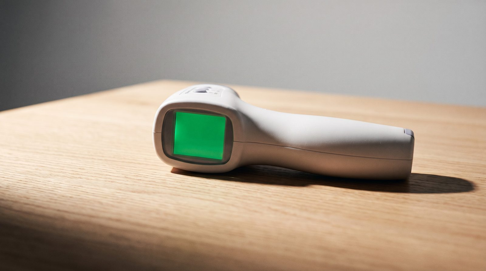
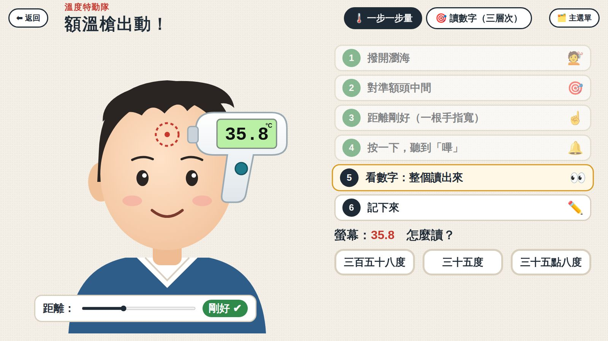

溫度特勤隊・第 2 節
額溫槍出動！
嗶一聲，量出體溫
今天的目標：照六個步驟量額溫，整個數字讀出來，看看正常嗎
今天的流程
今天要做這些事
1🧘 開場：心情地圖＋調節站開啟 ↗
2🔁 上一節：手會騙人跳到這頁 →
3🔫 認識額溫槍跳到這頁 →
46️⃣ 量額溫六步驟跳到這頁 →
5🌡️ 讀數字＋溫度尺跳到這頁 →
6💻 額溫槍模擬器開啟 ↗
7👫 兩人一組真的量跳到這頁 →
8🖨️ 講義＋記錄單開啟 ↗
9🌙 收尾：我做到了＋蓋章開啟 ↗
上一節還記得嗎？
右手剛泡過冰水，再摸普通的水，會覺得——
🥵A熱熱的
🥶B冰冰的
舉手投票：你選哪一個？
手會騙人！
所以要用溫度計來量，今天用的是額溫槍

認識新朋友
這是「額溫槍」
量額頭的溫度
不用碰到皮膚
「嗶」一聲，數字就出來
額溫槍量的是我們身體的溫度＝體溫
什麼時候會量？
早上進學校，量一下
🏫 早上進校門
🤒 覺得不舒服的時候
🏥 去看醫生的時候
量體溫，是在照顧自己的身體
量額溫
六個步驟，跟著做
1撥開瀏海💇
2對準額頭中間🎯
3距離一根手指寬☝️
4按一下，聽到「嗶」🔔
5看數字：整個讀出來👀
6記下來✏️
讀讀看
額溫槍螢幕出現這個數字，要怎麼讀？
A三十六點九度
B三十六度
C三百六十九度
指一指：哪一個？
36.9°C
小數點唸「點」：36.9 讀「三十六點九度」
讀數字的祕訣
整個數字都要讀！
36.9°C
36
三十六
.
點
9
九
三十六點九度
36.9 和 37 只差一點點，很靠近 37
一個一個讀：三十六、點、九，最後加「度」
量完看一看
溫度尺：正常？還是要告訴老師？
✅ 正常
🙋 告訴老師
35
36
37
38
39
37.5
36.2
✅ 正常
✅ 正常
36.9
✅ 正常
✅ 正常
37.8
🙋 告訴老師
🙋 告訴老師
🔵 看顏色🟠 讀出來⭐ 和 37.5 比
額溫 37.5 以上：可能發燒，要告訴老師 🙋
全班一起練
額溫槍模擬器
一步一步按：撥瀏海、對準、拉到「剛好」、嗶！整個數字讀出來，看看正常嗎。
▶ 開啟模擬器

動手做
兩人一組，真的量
1A 當小幫手，B 撥開瀏海👫
2A 照六步驟量 B🌡️
3B 整個讀出來，看溫度尺👀
4寫在記錄單上✏️
5換人！🔁
⚠ 額溫槍不對著眼睛；量完用酒精棉片擦一擦
快問快答
看誰最快！
36.4
正常？還是告訴老師？🔵 看溫度尺的顏色
正常
37.0
怎麼讀？🟠 整個數字讀出來
三十七點零度
37.8
要告訴老師嗎？⭐ 和 37.5 比一比
要
今天學到
說說看：今天學到什麼？
💇量額溫前，先撥開瀏海
👀數字要整個讀：36.9 讀三十六點九度
✏️量完要記下來
第 2 案破案！

下一節預告
溫度計的紅線
放進熱水，紅線會往上爬？還是往下掉？下一節來看看！